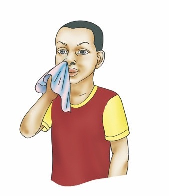
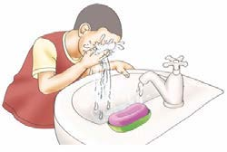
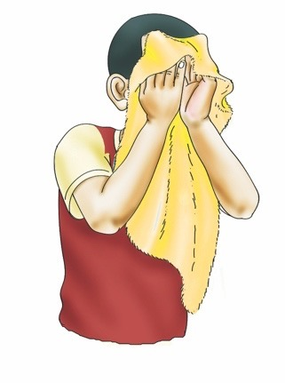

Page 7

I wash my eyes using
clean and safe water.
I wipe my nose using a
piece of clean cotton cloth.


I wash my face using soap,
and clean and safe water.
I dry my face using a towel.

I apply body oil on my face.